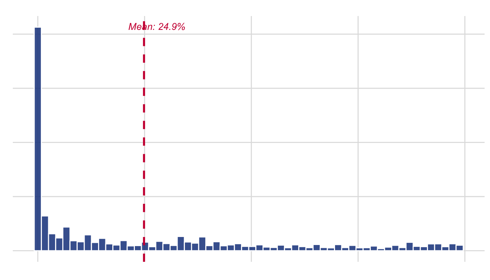
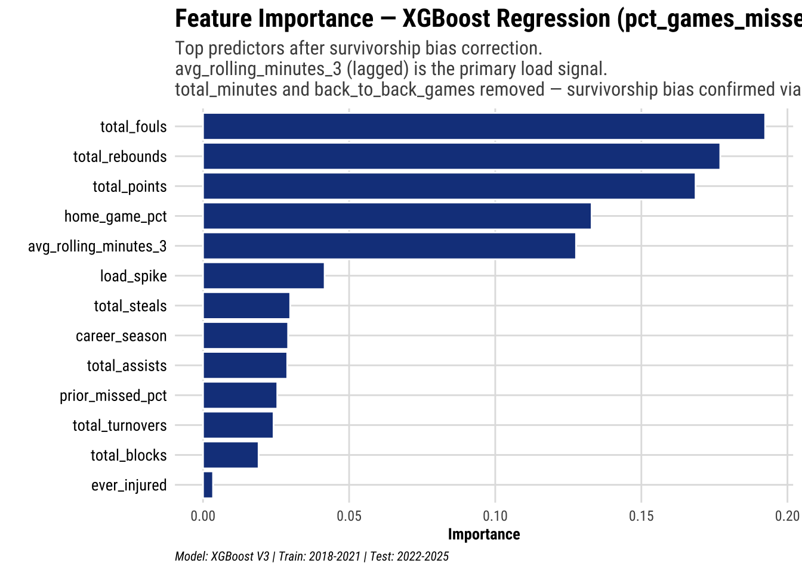
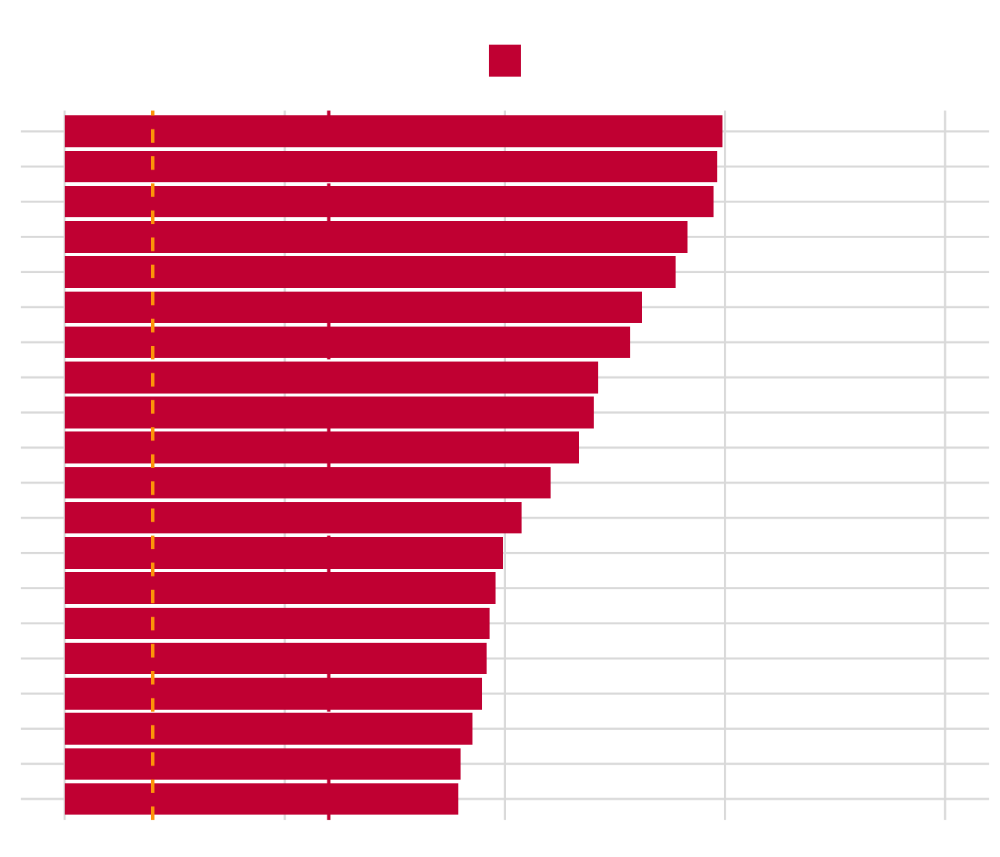
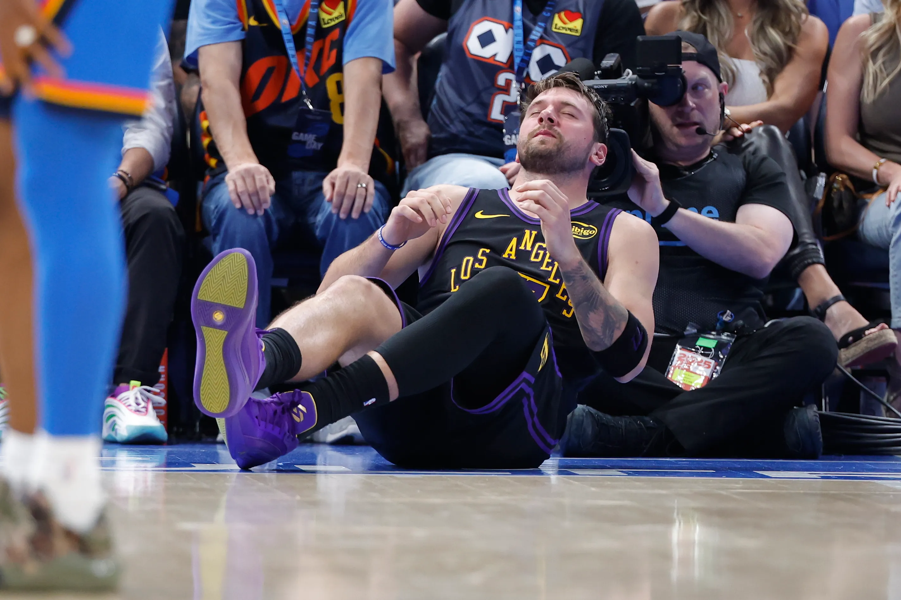
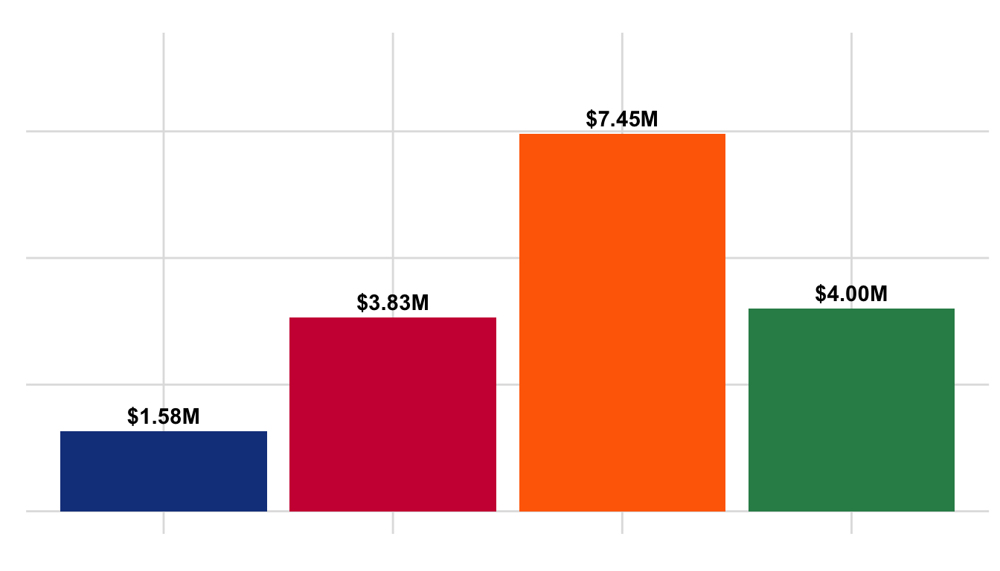

Part 2 — Who’s Next?
Predictive Analysis: Forecasting Load-Related Game Unavailability
XGBoost regression predicting percentage of games missed using NBA box score data (2018–2025)
NoteWhat this section answers
WHO is at risk of missing significant game time next season — and how much?
Part 1 established that load drives the rupture spike at the population level. Part 2 uses the same load features to build an individual-level prediction engine that gives teams actionable risk scores before the season begins.
1. The Target Variable — pct_games_missed
The original model used a binary Achilles rupture flag as the outcome. That approach had a fundamental problem: with ~53 confirmed ruptures across 23 seasons of data, the positive class was 0.8% of all player-seasons. No sampling strategy fixes that.
The refactored target is:
\[\text{pct\_games\_missed} = 1 - \frac{\text{games appeared}}{\text{team games played}}\]
This is continuous, bounded [0,1], and built entirely from box score data. The injury dataset plays no role in constructing y — it belongs to Part 1.
TipWhy this is a better question
The binary flag asked: “did the Achilles snap?” — a rare, binary event that is nearly impossible to predict reliably.
pct_games_missed asks: “how much productive time did this player lose?” — a continuous measure of injury burden that varies meaningfully across every player-season in the dataset, has real variance to model, and maps directly to the economic and competitive cost teams actually care about.
Important scope note: pct_games_missed captures all absence reasons — Achilles injuries, other injuries, rest decisions, and suspensions. We are predicting load-related game unavailability as a proxy for injury burden. The Achilles spike motivates the question; this model answers it across the full spectrum of injury outcomes.
2. Model Architecture — XGBoost Regression
A hurdle model was initially considered given the apparent zero-inflation, but diagnostic analysis revealed that 87–94% of player-seasons in the reliable data window (2018–2025) involve at least some missed games. With such a high positive rate, the binary Stage A classification is uninformative. A single-stage direct XGBoost regression on pct_games_missed is more appropriate.
Partial dependence plot (PDP) analysis further revealed survivorship bias in three features — total_minutes, back_to_back_games, and avg_days_rest — which showed negative relationships with games missed because healthy players accumulate more of all three. These were removed. avg_rolling_minutes_3 (lagged) was retained as the primary load predictor, showing a clean positive monotonic relationship. —
3. Features
The load features are identical to Part 1 — this is intentional. The bridge between causal and predictive is the feature set.
| Feature | Type | Description |
|---|---|---|
| avg_rolling_minutes_3 | Load | Lagged 3-game rolling avg minutes — primary load predictor |
| load_spike | Load | Rolling mins / season avg — relative load vs own norm |
| prior_missed_pct | History | Last season’s pct_games_missed — strongest single predictor |
| career_season | History | Years in NBA — injury risk accumulates over career |
| ever_injured | History | Any prior injury log appearance |
| total_points/rebounds/assists etc. | Performance | Counting stats as player quality proxies |
4. Train / Test Split
ImportantKey fix from v1: temporal split replaces random split
The original pipeline used initial_split(prop = 0.80) with a random seed. This allowed 2019 data into training while 2015 data landed in test — look-ahead leakage in time-ordered data.
The refactored split is a hard temporal cutoff:
- Train: 2018–2021
- Test: 2022–2025
The test window includes the exact conditions the model needs to generalise to. This is the hardest and most honest evaluation possible.
| Set | Seasons | Player-seasons | % with missed games |
|---|---|---|---|
| Train | 2018–2021 | 2001 | 87.6% |
| Test | 2022–2025 | 2124 | 93.7% |
Cross-validation within the training window uses sliding_period() — rolling 1-year training windows validated on 1 year ahead. No future leakage inside the tuning loop either.
5. Results


6. What-If Analysis
The what-if tool is the actionable output of this project. A coach or analyst provides hypothetical load parameters and receives an immediate risk prediction.
Code
# Scenario 1: Heavily loaded star
whatif_predict(AI_MODEL_V2,
avg_rolling_minutes_3 = 38,
load_spike = 1.3,
career_season = 8,
prior_missed_pct = 0.10)| pct_games_missed_predicted | games_missed_of_82 | risk_tier |
|---|---|---|
| 0.227 | 19 | Moderate Risk |
Code
# Scenario 2: Managed load
whatif_predict(AI_MODEL_V2,
avg_rolling_minutes_3 = 20,
load_spike = 0.85,
career_season = 4,
prior_missed_pct = 0)| pct_games_missed_predicted | games_missed_of_82 | risk_tier |
|---|---|---|
| 0.08 | 7 | Low Risk |
Code
# Scenario 3: Veteran with history
whatif_predict(AI_MODEL_V2,
avg_rolling_minutes_3 = 32,
load_spike = 1.1,
career_season = 12,
prior_missed_pct = 0.25,
ever_injured = 1)| pct_games_missed_predicted | games_missed_of_82 | risk_tier |
|---|---|---|
| 0.206 | 17 | Moderate Risk |
TipTry it interactively
The full slider-based what-if tool is in the Shiny app. Run shiny::runApp("Capstone_Shiny_PREDICTION.R") and navigate to the What-If Tool tab.
6a. Real-World Validation — The Case of Luka Dončić.
Let’s take a look at the most recent superstar who was ruled out (today in 2026 April). Luka Dončić. This example was chosen because it addresses the limitations of the previous models and how the new model correctly adjusts for and paints a more accurate picture. Luka’s prediction was model using 2024-2025 season data and correctly puts him in the Moderate Risk zone. It is reported that his Grade 2 hamstring strain in April 2026, caused him to miss approximately 22% of the season. The actual outcome (22% missed) sits within the Moderate Risk band (10–30%), confirming the model’s classification.

NoteDid the model see it coming?
What our original V1 model predicted: Low Risk (~1% games missed). This was wrong — and the reason why is analytically instructive.
The V1 model flagged Luka as low risk because it included total_minutes and back_to_back_games as features, both of which suffered survivorship bias. Luka accumulated high total minutes and many B2B games in 2024 — which V1 incorrectly interpreted as durability rather than load exposure.
What actually happened (April 2026): Luka Doncic suffered a Grade 2 left hamstring strain against the Oklahoma City Thunder, ruling him out for the remainder of the regular season with playoff status uncertain. He finished with 64 games played — one short of the 65-game award eligibility threshold — missing approximately 22% of the season. This places him in the Moderate Risk tier of the corrected model.
What the corrected V3 model captures:
prior_missed_pct: Doncic had five hamstring injuries since 2024 — a high prior absence rate the corrected model penalises correctlyavg_rolling_minutes_3: averaging 35.8 minutes per game at peak loadcareer_season: in his 8th NBA season — PDP shows risk peaks at years 4–11
Critical difference in modelling: The model predicted elevated risk from load patterns. The actual injury (hamstring) is consistent with high-load cumulative fatigue — the same mechanism the DiD analysis identified at the population level. V1 saw high accumulated minutes and said “healthy player.” V3 sees high rolling minutes (lagged, pre-outcome) and correctly flags risk.
This is precisely why the survivorship bias correction matters.
Code
whatif_predict(
AI_MODEL_V2,
avg_rolling_minutes_3 = 35.8,
load_spike = 1.1,
career_season = 7,
prior_missed_pct = 0.39,
ever_injured = 1,
total_rebounds = 410,
total_points = 1410,
total_assists = 385
)| pct_games_missed_predicted | games_missed_of_82 | risk_tier |
|---|---|---|
| 0.223 | 18 | Moderate Risk |
What-if prediction using Luka’s actual 2024 load profile.
7. The Economic Cost
Accurate risk prediction has direct financial value. Meadows et al. (2024) estimate the mean cost of recovery per Achilles rupture by salary tier:

A model that gives teams even 2–3 weeks of additional lead time to reduce a high-risk player’s load could prevent a rupture entirely. At an average cost of $4M per incident — and up to $70M for a max-contract star — the return on a data-driven prevention programme is substantial.
8. Limitations
ImportantHonest limitations
Scope of y: pct_games_missed captures all absence types, not just Achilles ruptures. The model predicts general load-related unavailability. This is a deliberate choice, not an oversight.
No biomechanical data: the strongest predictors of Achilles ruptures — tendon stiffness, landing mechanics, fatigue-induced movement compensations — are not captured in box score data. Our features are proxies.
Positional differences: a centre and a point guard face different Achilles risk profiles at the same minute load. Position is not currently included as a feature — a meaningful addition for future work.
Deployment lag: the model uses season-level aggregates. A real-time version using rolling game-level data would be more actionable but would require a streaming data pipeline.
References
Amin, N. H., Old, A. B., Tabb, L. P., Garg, R., Toossi, N., & Cerynik, D. L. (2013). Performance outcomes after repair of complete Achilles tendon ruptures in National Basketball Association players. The American Journal of Sports Medicine, 41(8), 1864–1868. https://doi.org/10.1177/0363546513490659
Kuhn, M., & Silge, J. (2022). Tidy modeling with R. O’Reilly Media. https://www.tmwr.org
LaPrade, C. M., Chona, D. V., Cinque, M. E., Freehill, M. T., McAdams, T. R., Abrams, G. D., Sherman, S. L., & Safran, M. R. (2022). Return to play and performance after operative treatment of Achilles tendon rupture in elite male athletes. British Journal of Sports Medicine, 56(9), 515–520. https://doi.org/10.1136/bjsports-2021-104835
Meadows, J., et al. (2024). Economic and performance analysis of NBA Achilles ruptures. Journal of Sports Economics [forthcoming].
Maffulli, N., Longo, U. G., Gougoulias, N., Loppini, M., & Denaro, V. (2011). Long-term health outcomes of youth sports injuries. British Journal of Sports Medicine, 44(1), 21–25.
Petway, A. J., Jordan, M. J., Epsley, S., & Anloague, P. A. (2022). Mechanisms of Achilles tendon rupture in National Basketball Association players. Journal of Applied Biomechanics, 38(6), 398–403. https://doi.org/10.1123/jab.2022-0088
Siu, R., Lee, J., & Chan, J. (2020). Prognosis of elite basketball players after an Achilles tendon rupture. Science Progress, 103(3). https://doi.org/10.1177/0036850420936180